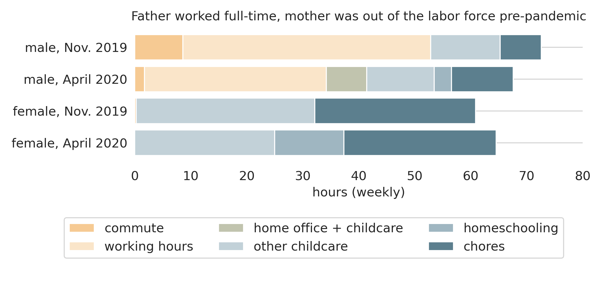

The CoViD-19 crisis and the gender division of market and household work
Hans-Martin von Gaudecker, Radost Holler, Lena Janys, Bettina Siflinger, Christian Zimpelmann
Universität Bonn & IZA
Introduction
- Data from the Netherlands
- Hours of work: February — September 2020
- Time use: November 2019, April 2020
- On average, women reduce one hour extra during lockdown, effect vanishes by June
- No additional effect of children being present in the household on either parent!
- Allocation of additional childcare depends on hours of work pre-CoViD:
- If both parents work full-time before pandemic: roughly equal shares
- Combinations FT / PT or FT / no work: Gender care gap increases
Data: Background
- LISS: Online Panel in the Netherlands, running since 2007
- Sibling of UAS
- Descendant of CentERpanel
- Joint usage via Open Probability-Based Panel Alliance
- Roughly 5,000 households / 7,500 individuals
- Each month, respondents get ≅30 minutes of questionnaires
- Around 85% of respondents can be linked to administrative microdata (not today)
Data: CoViD-19 surveys, Time Use
- CoViD-19 questionnaires
- March 20-31, April 6-28, May, June, September
- See https://liss-covid-19-questionnaires-documentation.readthedocs.io/
- Will mostly use hours of work
- Time use & consumption questionnaires
- Baseline: November 2019
- April 21-28: Similar to November 2019 edition, adapted to lockdown situation
- November: Similar to November 2019, adapted to current situation
Hours worked / worked from home

Fixed effects regressions: Full sample
- LHS: Hours of work
- RHS: Gender × month × (1, part time, essential worker, age), month × age
- Non-essential, FT women: 3 hours addt'l reduction during lockdown relative to men, gone by June
- Partial effect of essential for females: 4.4 hours, gone quickly
- RHS: Add month × (percentage of work doable from home, self-employment, profession, sector)
- No change
- RHS: Add gender × month × children under 12 at home
- No change
- If anything, hours are better preserved among (both) parents
- Other coefficients very similar when restricting sample to 2-parent families
Full-time / Non-working couples

Full-time / Part-time couples

Full-time x2 couples

Takeaways
- Gender division of tasks during CoViD-19: Very heterogeneous
- Not back to the 1950s
- Not the great equalizer
- Pre-existing patterns re-inforced
- Western Europe: Work hours of women (relatively) well preserved
- Consequence of highly subsidised daycare with comparably short hours?
- Glimpse of hope in the long run via changed norms?
- Home office accepted for men
- No long commute on 2-3 days
- Available for childcare emergencies?